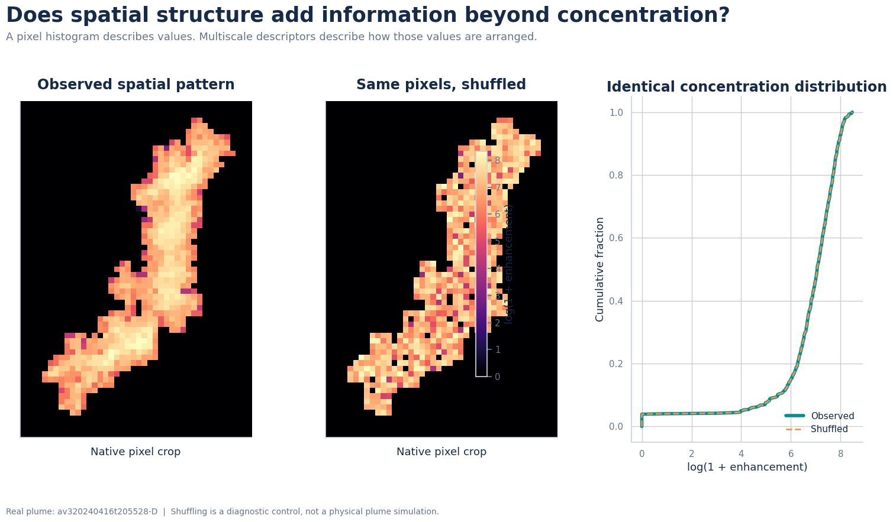
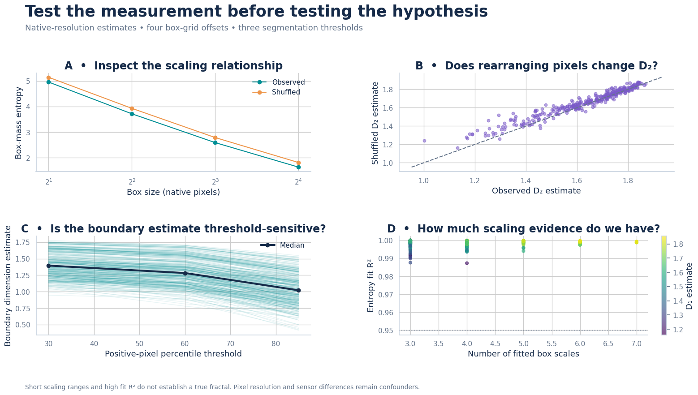
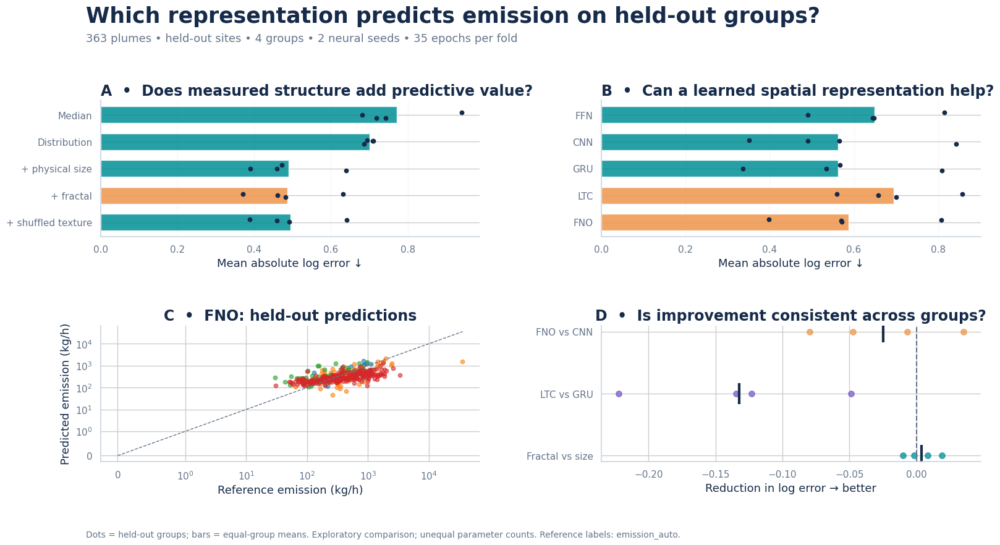

Carbon Mapper methane imagery, plume-shape features, and machine-learning emission estimates.
Remote-sensing images of methane plumes contain information about both concentration enhancement and plume geometry. This project investigated whether image-derived features could be used to estimate reported methane emission rates and whether spatial structure provided information beyond the concentration distribution alone. The analysis used Carbon Mapper concentration rasters from Southern California landfill sites and retained 363 usable plumes from 423 available records.
Two plume images can have the same concentration distribution while arranging those concentrations differently in space. To separate these effects, the observed pixel pattern was compared with a shuffled control that preserved the same pixel values but changed their spatial arrangement.

The feature analysis included concentration statistics and quantiles, physical plume area, width, and height, and fractal and multiscale descriptors such as information dimension, correlation dimension, lacunarity, and boundary scaling. Scaling relationships, pixel rearrangement, segmentation thresholds, and the number of available spatial scales were examined before the features were used in the predictive comparison.

Random-forest feature ablations were compared with feed-forward, convolutional, recurrent, liquid time-constant, and Fourier neural operators. Concentration-distribution features performed better than the median baseline. Adding physical plume size produced the largest improvement, reducing the group-balanced mean absolute log error from approximately 0.700 to 0.491 and increasing the pooled log-scale R² from 0.077 to approximately 0.508. Fractal features were also investigated as additional spatial descriptors. Overall, plume size and concentration distribution were the most helpful image-derived predictors of reported emission rate.

The results show that methane imagery contains useful emission-rate information even without meteorological inputs. The distribution of concentration enhancements provides an initial signal, while physical plume size adds substantial predictive value. Fractal and multiscale features provide a structured way to investigate plume complexity and spatial organization. This is an exploratory, fixed-budget comparison based on reported emission estimates rather than independent controlled-release measurements, so the findings are best interpreted as a foundation for further validation.
| Data source | Carbon Mapper methane concentration rasters |
|---|---|
| Study sites | Southern California landfill sites |
| Dataset | 363 usable plumes from 423 records |
| Predictors | Concentration distribution, plume size and shape, and fractal and multiscale structure |
| Models | Random forest, FFN, CNN, GRU, LTC, and FNO |
| Validation | Held-out sites and acquisition groups |